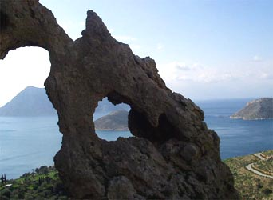
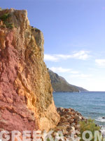
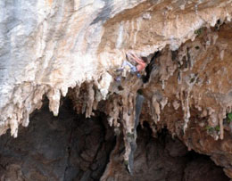
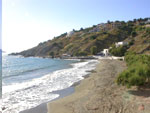
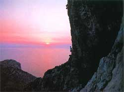

Welcome to ASIC 2007
The Sixth Annual Summer Interdisciplinary Conference, held at the Kalydna Island Hotel on the island of Kalymnos, Greece, Tuesday, June 26 – Sunday, July 1, 2007.

Kalymnos, Greece, host island for ASIC 2007.
See kalydnaislandhotel.gr for the hotel. Richard M. Shiffrin of Indiana University – Bloomington is the organizer. Email correspondence should be directed to shiffrin@indiana.edu or mailed to Richard M. Shiffrin at Indiana University (see the Contact tab for the address).
About the conference
The subject matter of ASIC is interdisciplinary, within the broad frame of cognitive science. ASIC uses the successful format of previous ASIC and AIC conferences: days are free for leisure activities, and talks and posters are in the later afternoon and early evening, followed by dinner. The date is chosen to make it convenient for attendees to bring family and friends. The conference is open to all interested parties, and an invitation is not needed to attend. Due to the small number of speaking spots, the organizer selects the attendees who give talks, and other attendees have the opportunity to present posters.
Conference aims
The conference covers a wide range of subjects in cognitive science, including modeling of cognition; neuroscience and cognitive neuroscience; psychology (perception, psychophysics, attention, information processing, memory and cognition); computer science and artificial intelligence; machine intelligence and learning; methodology and statistics; linguistics, psycholinguistics and computational linguistics; and philosophy of mind and cognitive science.
Conference format
There is a single speaking session each day, except Saturday, which has posters for the first half session. The conference starts with registration and a reception from 15:30–16:30 on Tuesday, June 26. On subsequent days (except Saturday) there are drinks and light snacks from 16:15–16:30, followed by a session of seven spoken presentations including a mid-session drink break. The first half session on Saturday is devoted to poster presentations, with drinks and snacks available throughout.
This format frees most of the day for activities with colleagues, family, and friends. The time frame allows day trips to nearby sites, cities, and islands, but arrange to return in time for the sessions.
Invitation
The conference is open to all scholars who fit the very general theme of the conference, and their family and friends. An individual invitation is not needed. We encourage you to send the conference information to friends and colleagues.
Registration
You are not officially on the request list for presenting research (talks or posters) until you submit the registration fee.
This fee pays for room and equipment rentals, snacks, the banquet, and more.
Fee schedule (US dollars)
| Payment before | By check | By PayPal |
|---|---|---|
| Feb 1, 2007 | $175 | $180 |
| Later | $200 | $205 |
How to pay
- Send a check for the correct amount to ASIC 2007, c/o Richard M. Shiffrin, Psychology Dept., Indiana University, Bloomington, IN 47405.
- Online by PayPal (entails a $5 handling fee).
Lodging
A hold has been placed on all 43 rooms and bungalows at the Kalydna Island Hotel.
The hotel has agreed to a price of €50/night for singles and €55/night for doubles, prices that include breakfast. The hotel also has some triples (€65/night) and four-bedded bungalows with pool view (€70/night). If all rooms at the hotel are booked, the hotel has arranged similar accommodations at similar prices in nearby hotels within about 100 meters.
Reservations can be made by email to kalydna@kalydnaislandhotel.gr or info@kalydnaislandhotel.gr, or by phone at 30-69776-71667. Kalydna Island Hotel requires one night's deposit upon booking; a full refund is available up to sixty days prior to arrival, after which the cancellation fee is the one-night deposit. No-shows are charged for the full reserved stay.
Dining
Three evenings are left open for attendees to explore local tavernas and other dining options; hotel meals are arranged on the remaining evenings.
There is no hotel meal planned for the opening evening, Tuesday, June 26, but food is served at the pre-session reception. No hotel meals are planned for Thursday, June 28 or Saturday, June 30 — for Saturday, the hotel arranged an optional "pirate ship" excursion to a deserted beach with a large midday meal, conditional on enough attendees signing up in advance. On Wednesday, June 27 and Friday, June 29, there are buffet meals at the hotel, and on Sunday, July 1, a banquet buffet ends the conference. Food and drink at session openings and breaks are paid for from participants' registration fees, as is a subsidy for the final banquet.
Beach outing and BBQ lunch
An optional excursion on Saturday, June 30: departure from the hotel about 9:00–9:30 AM, return by 3:30 PM. It includes transport from the hotel to the port and back, transport to a deserted Kalymnos beach on a traditional wooden pirate-type boat, and a beach BBQ lunch of fresh grilled fish and octopus, three salads, souvlaki, fruit, wine, beer, soft drinks and mineral water. Total price €52/person, offered only if at least 30 people sign up in advance.
Menus
Sample offerings across the week's meals include: Kalymnian mermizeli salad, potato salad, aubergine salad, tuna salad; chicken with garlic and almonds, spicy octopus, vegetable ratatouille, mousaka, stuffed tomatoes and peppers, pasta with seafood; and a selection of Greek syrup sweets and fruit for dessert. The final buffet banquet adds grilled octopus, mackerel and yellow mullet, stuffed wine leaves, and a wider selection of salads and cheeses. Wine, beer and soft drinks are included with most meals; prices ranged from €16–25 per person depending on the meal.
Travel
The Kalymnos airport is served by Olympic Airways, with flights to and from Athens (Eleftherios Venizelos airport).
By air
Return flights to Athens depart about 45 minutes after arrival. The 2006/2007 schedule from Athens to Kalymnos: Monday, one flight at 13:35 (via Astypalea); Tuesday and Thursday, two flights (08:40 direct, and 13:35 via Astypalea); Wednesday and Friday, one direct flight at 12:10; Saturday, one flight at 12:10 via Astypalea; Sunday, one direct flight at 12:10.
By ferry
There is at least one ferry per day from Athens (Piraeus) except Saturday. GA Ferries boats are slower and less comfortable but cheaper; Blue Star Ferries are faster (about 9 hours) and pricier. Before the Kalymnos airport opened, it was common to fly to Kos and take a 45-minute ferry to Kalymnos.
Getting around Kalymnos
Buses connect all parts of the island, with a bus station just outside the conference hotel (one-way ticket about €1). Taxis are easy to find — a taxi from the hotel to the port costs around €7–8, to Vathi (about 20 km) around €20, to Massouri around €5. Rental car companies include AVIS and Budget; motorbike rental is also available and is a common form of transport on the island.
Activities
Kalymnos has become a prime destination for rock climbing, with continuing development of climbing areas and routes.

The limestone cliffs of Kalymnos.
Climbing

Sport climbing on Kalymnos's featured limestone.
There are approximately 25 developed climbing areas along the west coast, within easy access from the hotel, each with many bolted routes on very featured limestone, often with stalactites and similar features. Most are one-pitch climbs, but some run up to five pitches, at all levels of difficulty from beginner to expert. A guidebook by Aris Theodoropoulos (2006) covers the island's climbing, and a summary is available at climb-kalymnos.com.
Water and other sports
Scuba diving, snorkeling, hiking, fishing, sailing and windsurfing are all available on and around the island.
Leisure and tourism
On Kalymnos, the Sea World Museum (Museum of Submarine Finds) in Vlychadia displays sponges and sunken treasure retrieved from local shipwrecks. On the neighboring islet of Telendos — reached by boat from Myrties, with no roads or traffic — snorkeling and scuba diving reveal underwater ruins of the old capital, lost to the sea in a 535 AD earthquake; the quayside is a favorite spot for evening views back toward Myrties and Massouri, and several small beaches (including a naturist beach at the far end) sit along rough coastal tracks.

One of the island's beaches, a short walk from the hotel.
A daily hydrofoil runs from Pothia (via Kos) to Bodrum on the Turkish coast, offering access to shops, a local market, a crusader castle, and museums, plus easy onward access to archaeological sites such as Ephesus. Nearby islands including Kos, Rhodes, and Samos are also within reach for day trips or extended stays before or after the conference.

Sunset over the Aegean near Kalymnos.
Contact
Email is preferred for all correspondence.
Conference organizer
Rich Shiffrin
Indiana University – Bloomington
shiffrin@indiana.edu
Tel: 812-855-4972 · Fax: 812-855-9871
Address correspondence to
Annual Summer Interdisciplinary Conference (ASIC 2007)
c/o Prof. Richard Shiffrin, Psychology Department
Indiana University, 1101 E. 10th St., Bloomington, IN 47405
Webmaster / conference coordinator
Please direct questions concerning the website to:
Krystal Klein
Indiana University – Bloomington
krklein@indiana.edu